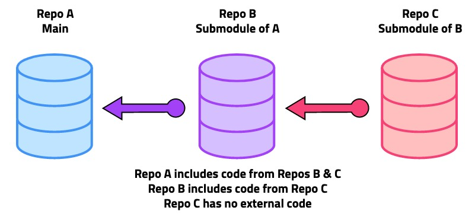
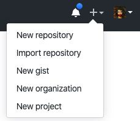
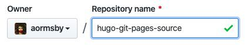
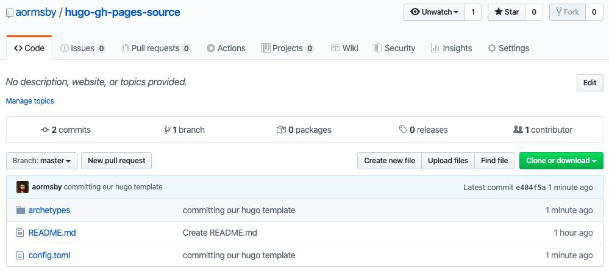
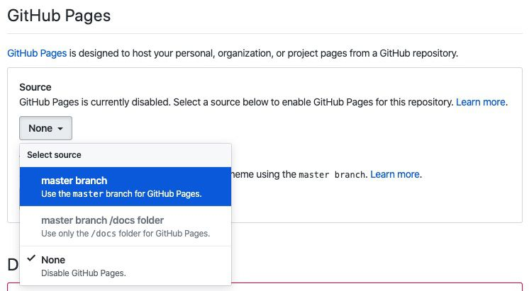
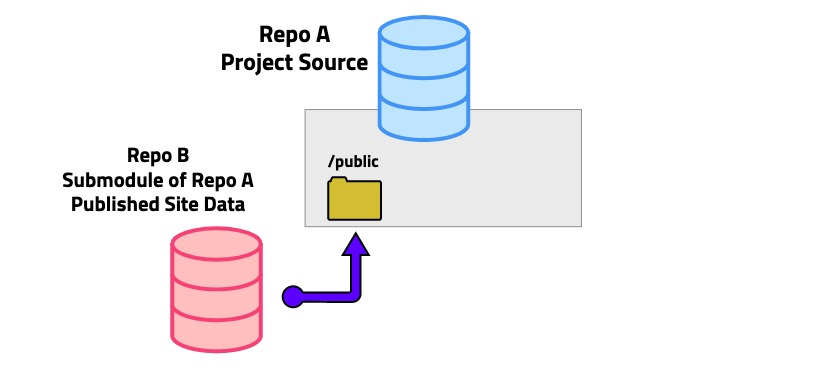

How to Set Up a Hugo Site on Github Pages - with Git Submodules!

Table of Contents
Overview
I made this blog site using the Hugo static site generator because I wanted to build a simple site where I could have full control over every detail - not like using Wordpress, Squarespace, or Wix. With Hugo, I can add and remove templates and functionality at will, and it feels great to have that kind of power. You probably ended up here because you want that, too.
In this post, we’ll take a look at how to:
- Create a new Hugo site
- Host it on Github Pages
- Use git submodules to separate our site’s key directories into manageable chunks
We’ll also go over the benefits (and drawbacks) of using submodules in our setup, and by the end of this post, we’ll have a new Hugo project hosted on Github Pages and ready for action.
Please note:
I’ll talk a little about branching inside our submodules later on. To keep things simple, you can assume that I’ve stayed on the main ‘master’ branch of each git module. Also, I work on a Mac so all of my commands are Mac-specific.
Why Git Submodules?
Every git project is stored as a versioned code repository (a repo). Git submodules allow us to reference other repos within a project, which effectively puts a project inside a project (or a repo inside a repo). The submodule’s code can then be used by the main project, but the submodule maintains its own commit and branch history, which separates the projects and can be a pretty powerful thing.
In a Hugo project, most of what we see is source data - the raw files we manipulate before building our site. After Hugo builds our site, our ‘ready-to-publish’ data gets output to the public directory of our project. By turning the public folder into a submodule of the main project, we can treat it as a separate entity with a separate history. Let’s see what that process looks like.
Install Hugo and Create a Project
First things first, we need to install Hugo! We’ll run through the key Mac commands quickly here, but if you need any more help you can always check Hugo’s ‘Quick Start’ guide for more details or information about installing on Windows and Linux.
# 1. Open a terminal. Alternatively, you can VSCode's terminal - it's great!
# 2. If you don't have brew installed --
> /bin/bash -c "$(curl -fsSL https://raw.githubusercontent.com/Homebrew/install/master/install.sh)"
# 3. Install Hugo
> brew install hugo
# 4. Move to the directory where you want to create the project.
> cd [MY/DIRECTORY/NAME]
# 5. Create a new Hugo project. I'll use "hugo-gh" as my sample name.
> hugo new site [SITE_NAME]
So far, we’ve installed Hugo on our machine and created a new template project named hugo-gh. If you’re following Hugo’s Quick Start guide, you may be tempted to move straight on to adding a theme, running the local server, and seeing your site. We’ll absolutely get to all that, but since our goal here is to use git submodules to manage the different parts of our project, it would benefit us to go through some setup steps on Github first.
Push Project Files to Github
Let’s get our project versioned with Github right away! We’ll need to create two repositories on Github - one to host our source code and one to host our live site data.
Source Code Repository
Sign in to Github and create a new repository. I’ll call mine hugo-gh-pages-source.
 Hot tip: If we create a repo without a README file it’s easier to avoid accidental history conflicts when pushing a local project to a fresh repo. We can always add one later.
When our new empty repo is ready, go back to the terminal window and input these commands to initialize our local repo and push to Github.
(If you already have a public folder in your project, delete it before doing any of this to save some headaches.)
# 1. Enter the project folder.
> cd hugo-gh
# 2. Initialize git locally.
> git init
# 3. Set our new Github repo as the remote for our local project
# (my sample URL - https://github.com/aormsby/hugo-gh-pages-source.git)
> git remote add origin https://github.com/[GITHUB_USERNAME]/[SOURCE_REPO_NAME].git
# 4. Stage all files for commit.
> git add .
# 5. Commit files.
> git commit -m "committing our hugo template"
# 6. Push to the remote master
> git push -u origin master
And there you have it! Our project source is now pushed to our Github repo.
You could absolutely set up your source repo to be the host of your site using Github Pages, and you may have good reasons for doing so. That would require a different setup that you can find steps for on Hugo’s Host on Github docs page. However, if we do this we ignore our chance to separate public into a separately versioned repo. To accomplish this, we have to create a second repository.
Live Site Data Repository
Let’s add our first submodule to the project! Remember, our goal is to separate the commit histories of our project source and our site build output to the public directory. First, we create another repo on Github for our public site data. I’ll call mine hugo-gh-pages-public. In our local terminal, run the following command from the project root.
# my sample URL - https://github.com/aormsby/hugo-gh-pages-public.git
> git submodule add "https://github.com/[GITHUB_USERNAME]/[PUBLIC_REPO_NAME].git" public
Sweet! We now have a submodule initialized and loaded into our project under the public directory, and it’s already connected to its remote origin. Let’s do a quick site build just to put something into the remote Github repo. The commands needed are a little tedious, but it’s good to know the process.
# 1. Perform a site build and output to 'public/' directory.
> hugo
# 2-4.
> cd public
> git add .
> git commit -m "first build"
# 5. Return to the project root.
> cd ../
# 6-7.
> git add .
> git commit -m "first build - update submodule reference"
# 8. Push the source project *and* the public submodule to Github together.
> git push -u origin master --recurse-submodules=on-demand
It’s super important when we build to make sure that we commit and push both the public submodule and the main project. For each submodule commit, the project updates its reference to the submodule to maintain its connection to the correct commit. The --recurse-submodules=on-demand command pushes all of the project modules at the same time.
git status commandEnable Github Pages
On Github, our hugo-gh-pages-public repo now has some data. Go to the repo settings and find the Github Pages section. Set the Source of our site to master branch.
With these settings, Github Pages will be able to serve our site from the repo starting with the index.html file in its root directory. The live URL for the site is built from your user name and the project name. Here’s my sample URL - https://aormsby.github.io/hugo-gh-pages-public. At this point, our site won’t display anything except an error message since Hugo requires some page templates or a full theme to generate the pages. That’s fine. We just wanted to add some stuff to Github so we could access the repo’s Github Pages settings as we just did.
Benefits of Making a Submodule in ‘Public’
To recap, here’s our project setup so far.
Let’s take a look at some of the benefits of this system.
-
No accidental deploys - With our source code separated from our site data, it’s a lot harder to accidentally push unfinished work to our live site. Even if we make builds locally and push our source changes, we won’t push to our hugo-gh-pages-public repo without explicitly running commands to make that happen. *sigh of relief*
-
Separate rollbacks - If something goes wrong, the main project and public project can be separately rolled back to earlier commits. (Just remember to commit the modified reference updates to the main module!)
-
Branch work is easier - Changing branches in our source project will not change branches in our subproject (and vice versa). This is another nice safety buffer, and it gives us more options for branching in either module.
-
Ready for site staging - We can easily create development branches in the public submodule that could be served as development subdomains of our site and used for testing new features.
Some Drawbacks
Of course, it’s always wise to assess the risks of any setup, and there are many opinions on the ‘perfect system’ in the dev world - tell me about yours in the comments! To shine some light on the potential downsides of our submodule use, here are some of the concerns I’ve thought about.
-
Juggling multiple repos - With more submodules comes more administration. It doesn’t seem so rough for me, but right now I’m working on my own. Running interlinked, asynchronous repositories comes with its own challenges in a team setting, particularly if someone forgets to push updated submodule references to the source.
-
No site staging with Github Pages - While the public submodule can branch and easily store data used in a site staging system, Github Pages does not seem to support subdomains from different project branches. That’s more of a Github Pages drawback, but it means we can’t take full advantage of our setup just yet. Another hosting platform might offer a solution - I’ll be looking into some options in a future post.
Add a Theme to Our Site
Wait, we’re not finished just yet! Remember how our site doesn’t display anything except an error message right now? We need some templates to get things up and running. The easiest way to get some is to add one of the many Hugo themes to our project. Since I’m already using it on this site, I’ll use the Hello Friend theme in my example.
Many guides for adding a theme - including Hugo’s own docs - just tell you to clone the theme repo or download and copy it into your project’s themes directory. But hey, our theme today is submodules, so I propose that we add a theme to our project as a submodule since doing so would give us some nice dev powers over the theme.
Look at it this way - directly cloning a theme into our project has two major problems.
-
We can’t commit to the theme’s upstream repo, because we don’t have permission. This means we can’t make changes to the theme and then keep them versioned.
-
A cloned project in a subdirectory isn’t linked with the main project. When a submodule is added to a project, the main project adds a reference to it in a file named
.gitmodules. Without that reference, the main project and the theme project aren’t connected, which could cause confusion or problems down the line.
Let’s solve each of those problems in one fell swoop.
- Make a fork of the Hello Friend theme so we have our own copy of it.
- Add our forked repo as a submodule in our main project’s
themesfolder.
# Add the theme submodule from the root project folder
# my sample URL - https://github.com/aormsby/F-hugo-theme-hello-friend.git
> git submodule add https://github.com/[GITHUB_USERNAME]/[FORKED_THEME_REPO_NAME].git themes/hello-friend
Boom! Now we have our own fork of a cool theme referenced as a submodule of our Hugo project. We can make any changes we want and push them to our own repo. I’ll get into more advanced uses of theme submodules in another post, but for now we have the basics in place.
Things won’t be quite right without tweaking a few final settings, so let’s open the config.toml file in our project root so we can modify a few lines.
- Add a line so our site builds using our new theme.
theme = "hello-friend"
- Because we’re making a Github ‘project site’ we want to change the
baseURLto match our project URL.
baseURL = [GITHUB_USER_NAME].github.io/[PROJECT_NAME]
For example, mine will say aormsby.github.io/hugo-gh-pages-public. To understand the difference between setting up a project site and a user/organization site, see these Github Pages and Hugo docs on the matter.
There are a lot more theme settings that can be adjusted in your config file, but you can explore those on your own. Let’s deploy!
Test Site and Deploy
Running the terminal command hugo server in our project root spins up a local live preview of our site that can be viewed in a browser at localhost:1313. Run this now to check if our site is displaying anything (it should!), and then stop the process with Ctrl+C. Just like we did before, run the commands to build, commit, and push. (Note that we didn’t change anything in the theme, so we don’t have to push anything in that repo.)
> hugo
> cd public
> git add .
> git commit -m "build with theme"
> cd ../
> git add .
> git commit -m "build with theme - update submodule reference"
> git push -u origin master --recurse-submodules=on-demand
After a few minutes, refresh the live site at https://[USER_NAME].github.io/hugo-gh-pages-public and check out your new site! Congratulations, you’ve done it!
Next Steps
-
Theme Branches and Getting Updates - I’ve worked out a nice branch-based system for continuing to get updates from the original theme repo while adding and changing things our forked theme repo. It’s super useful. Next post!
-
Better Deploy - I’m sure you noticed that we had to use a plethora of terminal commands to add, commit, and push files to the main project and its submodules to maintain proper commit references. I wrote them out in this post for clarity, but this process is definitely something we can automate. Hugo’s docs provide a basic deploy script to do this, and I’m working on a greatly improved version of it that I’ll write about when it’s ready for action.
-
Custom domains / CNAME - You may want to set up a custom domain on Github Pages. Here’s some good documentation on how to do that.
Thanks for reading!~